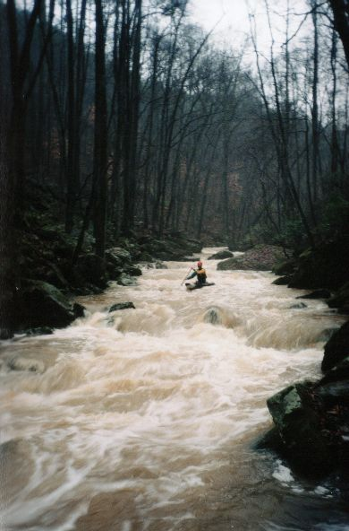

| Brian cleans the first drop just after tunnel 1, this leads to... | |
| A fairly long slide with small holes and some eddies. It slants a bit to the right, which is not good because... | |
| As you can see as Dave runs it, that undercut on river left has a tree in it. | |
| Dave in the action. The whole section between the last two bridges is essentially one long rapid. |
| Dave at a drop. Note the cut trees on river left. | |
| Shane. More cut trees in the upper drop, you are welcome. | |
| Brian on part two of the same section. Two more cut trees in the foreground. | |
|  | Of course there has to be one shot of me. This is the upper part of Oblivion, the final rapid. |
| Shane on his way into the void at the bottom of Oblivion |